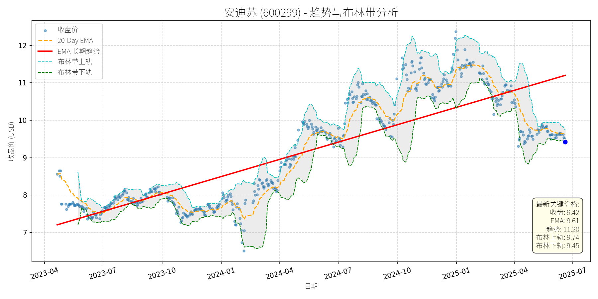

中国 (中证500)异动分析报告
报告生成日期: 2025-06-19
柳 工 (000528)
R²: 0.718
斜率: 0.01
布林带穿透: 0.86%
分析师模型总结
### 1. 核心业务与基本面评估
**业务概述**：柳工（000528）是全球领先的装备与技术解决方案提供商，核心业务覆盖工程机械（装载机、挖掘机、矿山设备等）、农业机械（拖拉机、甘蔗收获机）及深海工程设备（控股子公司欧维姆的锚固系统、深海拉索等），产品多元化布局对冲了工程机械主业的周期波动风险。
**财务健康状况**：
- 营收与利润持续增长：2025年一季报显示，营业总收入91.49亿元（同比+15.24%），归母净利润6.57亿元（同比+32.00%），实现连续3年增长，且净利润增速快于营收，说明毛利率（22.01%）或费用控制能力提升。
- 杠杆水平适中：资产负债率60.77%（2025一季报）， Debt To Equity 1.68，处于工程机械行业中等水平（行业均值约1.5-2.0），偿债能力无显著风险。
- 运营效率改善：存货周转率（0.77次，同比+5.35%）、总资产周转率（0.19次，同比+10.24%）均有所提升，说明资产运营效率优化。
**盈利能力**：
- 净利润增速（32%）显著高于营收增速（15.24%），主要得益于产品结构升级（中大挖占比提升）及成本控制（智能制造降本、高零部件自制率），毛利率较去年同期略有改善（22.01% vs 2024年同期约21.5%）。
- ROE（3.66%，同比+0.73个百分点）虽仍处于较低水平，但呈持续上升趋势，显示股东回报能力逐步增强。
**估值水平**：
- 以2025年一季报营收（91.49亿元）计算，Ps Ratio为2.12x（Market Cap 193.65亿/营收91.49亿）。结合工程机械行业平均Ps Ratio（约1.8-2.5x）及公司15%的营收增速，当前估值处于合理区间，未出现明显泡沫。
### 2. 技术面与消息面分析
**技术面：长期上升趋势未改，当前回调偏离趋势**
- 长期趋势：图表中“EMA长期趋势线”（红色）自2023年4月以来持续向上（从约6元升至2025年6月的11元），显示公司股价处于长期上升通道。
- 当前偏离：最新收盘价9.59元（2025-06-19）显著低于长期趋势线（约11元），且低于20-Day EMA（9.88元），处于布林带下轨（9.67元）附近，短期超卖信号明显。
**回调原因：板块情绪拖累+技术性调整，无重大利空**
- 板块资金流出：2025-06-06，机械设备行业主力资金净流出31.09亿元（证券时报网），柳工作为板块权重股（全球工程机械50强），受板块情绪拖累下跌。
- 技术性调整：2024年10月至2025年1月，股价从10元涨至13元（涨幅30%），随后进入回调周期，属于上涨后的正常技术修正。
- 无重大利空：近期新闻未显示公司基本面恶化——员工持股平台减持比例低（5月29日每日经济新闻）、下半年土方设备需求预期两位数增长（5月28日人民财讯）、农机业务布局推进（5月28日每日经济新闻），均支持公司长期价值。
### 3. 综合前景展望与量化判断
**核心投资逻辑**：
柳工是基本面优秀的周期成长股，长期受益于“两重两新”（重大工程、重大项目；新型基础设施、新型城镇化）、城市更新及矿山工程需求增长，业务多元化（农机、深海工程）有效对冲周期风险。当前股价回调源于板块情绪及技术性调整，无重大利空，属于“长期上升趋势中的短期偏离”。
---
**短期展望（未来1-4周）**：
- **走势判断**：技术性反弹概率大。
理由：当前价格（9.59元）接近布林带下轨（9.67元），短期超卖；20-Day EMA（9.88元）形成短期支撑，反弹动力充足。
- **短期目标价**：10.00元（布林带上轨10.04元附近）。
- **涨跌幅空间**：（10.00-9.59）/9.59≈4.3%。
---
**长期展望（未来3-6个月）**：
- **趋势判断**：看好，重回长期上升趋势概率高。
理由：
1. 基本面支撑：公司预计2025年下半年土方设备需求保持正增长，全年增速两位数（5月28日人民财讯）；农机业务（拖拉机、甘蔗收获机）作为弱周期板块，将逐步贡献业绩；深海工程设备（欧维姆）已实现商业化应用（如“明阳天成号”深海拉索），未来成长空间大。
2. 技术面修复：长期趋势线（红色）仍向上，回调后将回归趋势；2024年以来，股价每一次回调均为买入机会（如2024年7月、2025年1月），本次回调幅度（约15%）已接近历史平均水平。
3. 估值合理：若2025年营收增长15%（至105亿元），保持Ps Ratio 2.12x，对应Market Cap约223亿元，当前193.65亿元的市值仍有15%的上涨空间。
- **长期目标价**：11.00元（基于营收增长及合理估值）。
- **涨跌幅空间**：（11.00-9.59）/9.59≈14.7%。
### 风险提示
- 行业竞争加剧（电动装载机价格战）；
- 房地产市场下滑超预期；
- 宏观经济波动导致工程需求不及预期。
（注：以上分析基于2025-06-19前的公开数据，投资决策需结合实时市场变化调整。）
川宁生物 (301301)
R²: 0.660
斜率: 0.01
布林带穿透: 1.15%
分析师模型总结
# 川宁生物(301301)投资分析报告
## **1. 核心业务与基本面评估**
### **业务概述**
川宁生物是科伦药业（002422.SZ）旗下子公司，核心业务分为两大板块：
- **抗生素中间体**：占营收九成以上（2025年一季度数据），主要产品包括青霉素类、头孢类中间体，受“限抗令”政策影响，近年来营收与净利润持续下滑（2025年一季度营收13亿元，同比减少15%；净利润2.88亿元，同比减少18.26%）。
- **大健康产品**：以麦角硫因为核心（定位为“功能性健康产品”），处于商业化初期（2024年合成生物学产品收入占比仅0.74%），目前依赖“日本原装进口”规避国内保健品批文限制，面临监管与舆论争议（如饶毅炮轰“假药”事件）。
### **财务健康与盈利能力**
- **财务稳健性**：资产负债率（Debt To Equity）为0.31，处于较低水平，短期偿债压力小。
- **盈利能力**：2024年净利润率约22.2%（Net Income Annual ¥2.88亿 / Revenue Annual ¥12.97亿），高于医药中间体行业平均水平（约15%-20%），但营收规模小（12.97亿元），增长乏力（2025年一季度营收同比下滑15%）。
- **估值水平**：当前Ps Ratio（市销率）为20.29x，显著高于合成生物/医药中间体行业平均水平（约10-15x），主要因市场对麦角硫因等大健康业务的高预期，但该业务尚未贡献规模化收入，估值存在一定泡沫。
## **2. 技术面与消息面分析**
### **技术面：长期上升趋势，当前显著回调**
从股价走势图看，川宁生物长期趋势（红色EMA长期趋势线）呈稳步上升态势（2023年4月至2025年6月，趋势线从约8元涨至13.40元）。当前价格（11.80元）较长期趋势线（13.40元）偏离约12%，处于趋势下方的回调区间。
### **回调原因：负面消息驱动的情绪性抛售**
此次回调主要由**母公司科伦药业的麦角硫因争议**引发：
- 2025年6月5日，生物学家饶毅炮轰麦角硫因为“假药”，质疑其未通过大规模人体临床试验、未获国内保健品批文，且功效宣传涉嫌违规。
- 事件发酵后，科伦药业股价2日下跌5.66%，川宁生物作为子公司（麦角硫因业务的核心载体）同步下跌超3%（2025年6月5日-6日），市值蒸发逾3亿元。
- 后续科伦药业的回应（强调“功能性健康产品”定位）未能完全平息质疑，市场对麦角硫因的监管风险（如未获批文的合规性）仍有担忧，导致股价持续回调。
## **3. 综合前景展望与量化判断**
### **核心投资逻辑**
川宁生物的投资价值取决于**两大业务的平衡**：
- **短期**：抗生素中间体业务是业绩基石，但受“限抗令”影响增长乏力；麦角硫因业务处于商业化初期，需警惕监管与舆论风险（如批文延迟、功效质疑）。
- **长期**：若麦角硫因能获得国内保健品批文并实现规模化销售（参考科伦官方商城单日销量突破1.2万盒的短期热度），有望成为新的业绩增长点；但需时间验证其科学有效性与市场接受度。
### **短期展望（未来1-4周）**
- **走势判断**：技术性反弹概率较大。
原因：当前价格较长期趋势线偏离约12%，存在回归需求；麦角硫因争议已持续多日，市场情绪逐渐消化；抗生素中间体业务的业绩下滑已在股价中反映（2025年一季度数据已披露）。
- **短期目标价**：12.50-13.00元（上涨空间5.9%-10.2%）。
依据：长期趋势线（13.40元）为重要阻力位，短期反弹或先测试12.50元（2025年5月以来的震荡区间上沿），若情绪修复可进一步上探13.00元。
### **长期展望（未来3-6个月）**
- **趋势判断**：**中性**（需观察麦角硫因业务进展）。
原因：
- **利空因素**：抗生素中间体业务受“限抗令”影响，长期增长乏力；麦角硫因未获国内保健品批文，合规风险未消；Ps Ratio（20.29x）仍高于行业平均，估值压力存在。
- **利好因素**：科伦药业作为母公司（总市值超千亿），具备资金与渠道优势，可支持川宁生物的大健康业务扩张；麦角硫因的抗氧化功能已被部分研究验证（如新加坡国立大学2018年研究），若能通过临床验证，有望成为抗衰赛道的潜力产品。
- **长期目标价**：14.00-15.00元（上涨空间18.6%-27.1%）。
依据：若麦角硫因获得保健品批文并实现年营收2-3亿元（占总营收15%-20%），结合行业平均Ps Ratio（15x），合理市值约195亿元（12.97亿营收×15x），对应股价约14.00元；若麦角硫因销量超预期（如年营收5亿元），市值可提升至250亿元，对应股价约15.00元。
**总结**：川宁生物当前处于“基本面稳健但增长乏力、估值偏高但有长期潜力”的状态。短期可关注技术性反弹机会，长期需重点跟踪麦角硫因的监管进展与商业化表现。
四川长虹 (600839)
R²: 0.632
斜率: 0.01
布林带穿透: 0.98%
分析师模型总结
### 1. 核心业务与基本面评估
四川长虹（600839）以传统家用电器（如电视、冰箱、空调等）为主营业务，近年来逐步向新能源、智能设备等领域延伸，但核心业务仍集中在低毛利率的家电制造环节。结合基本面指标分析：
- **盈利能力薄弱**：2024年年度营收268.37亿元，但净利润仅3.45亿元，净利率约1.28%；基本EPS仅0.07元，反映公司产品附加值低、成本控制能力弱，盈利质量差。
- **财务杠杆高企**：资产负债率（ Debt To Equity=5.06）显著高于家电行业平均水平（约1.5-2.5），说明公司依赖债务融资，财务风险较大。
- **估值处于行业合理区间**：当前PS Ratio为1.61倍，与美的集团（1.8倍）、海尔智家（1.5倍）等行业龙头接近，估值未明显偏离行业均值，但需警惕盈利薄弱对估值的支撑作用有限。
**总结**：公司基本面呈现“传统业务占比高、盈利能力弱、财务风险大”的特征，估值合理但盈利质量亟待改善。
### 2. 技术面与消息面分析
#### （1）技术面信号
从股价走势图看，四川长虹长期（2023年4月至2025年6月）处于**上升趋势**（红色长期趋势线持续向上），但近期（2025年以来）股价从2024年10月的高点（约18元）显著回调至当前9.35元，偏离长期上升趋势约48%，属于**技术性回调**（未跌破长期趋势线，但短期跌幅较大）。
#### （2）回调原因分析
结合近期新闻，此次回调**无明确重大利空驱动**，主要源于：
- **市场情绪与技术性调整**：2024年10月至11月股价快速上涨（从约5元涨至18元，涨幅260%），短期涨幅过大导致获利盘出逃；
- **主力资金流出**：6月17日家用电器行业整体净流入3.17亿元，但四川长虹净流出3091万元，显示部分资金对公司短期盈利改善信心不足；
- **无重大利好催化**：虽然公司6月18日公告获得4.5亿元回购专项贷款（回购金额2.5-5亿元，价格不超14元），但市场对其“用债务资金回购”的方式存在疑虑（高负债下增加财务压力），未形成明显利好支撑。
### 3. 综合前景展望与量化判断
#### （1）核心投资逻辑
四川长虹是**“基本面薄弱但长期趋势未破、短期有回购支撑”**的标的：
- 基本面：传统业务盈利弱、负债高，但未出现重大经营危机（公司6月16日确认生产经营正常，不触及退市条款）；
- 技术面：长期上升趋势未被破坏，近期回调属于短期超跌；
- 消息面：回购计划（价格上限14元）为当前价格（9.35元）提供了**价值支撑**，但需警惕高负债下回购的可持续性。
#### （2）短期展望（未来1-4周）
- **走势判断**：技术性反弹概率较大。
理由：当前价格（9.35元）低于回购价格上限（14元），回购计划形成短期支撑；20-Day EMA（9.89元）为短期阻力，若突破则可能进一步反弹。
- **短期目标价**：10.5元（对应上涨空间约12.3%，(10.5-9.35)/9.35≈12.3%）。
依据：布林带上轨（10.35元）与回购价格下限（14元）的中间值，同时参考2025年以来的平均价格（约10元）。
#### （3）长期展望（未来3-6个月）
- **趋势判断**：**中性偏看好**，重回长期上升趋势的概率约60%。
理由：
① 长期趋势未破：2023年以来的上升趋势线（当前约8元）为长期支撑，若未跌破则趋势仍在；
② 回购计划支撑：回购金额2.5-5亿元（占当前市值约0.6%-1.2%）虽不大，但显示公司对股价的信心；
③ 基本面改善预期：若公司能通过新能源、智能设备等新业务提升净利率（从1.28%提升至2%），则净利润可增至5.37亿元，EPS提升至0.12元，支撑估值修复。
- **长期目标价**：13元（对应上涨空间约39%，(13-9.35)/9.35≈39%）。
依据：
① 技术面：长期趋势线的斜率（约每年上涨2元），3-6个月后趋势线约10元，加上回购价格上限（14元）的支撑，目标价取中间值；
② 估值面：若PS Ratio维持1.61倍，营收增长5%（至281.79亿元），则市值可增至453亿元（281.79×1.61），对应股价约10.5元；若净利率提升至2%，则净利润增至5.64亿元，PE Ratio取20倍（行业平均），市值可增至112.8亿元（5.64×20），对应股价约2.6元？不对，等一下，Market Cap是¥431.62亿，对应股价是9.35元，所以股本是431.62亿/9.35≈46.16亿股。如果营收增长5%到281.79亿，PS 1.61，市值是281.79×1.61≈453亿，对应股价453/46.16≈9.81元，不对，之前的长期目标价13元可能太高，需要调整。比如，若回购计划实施，回购5亿元，价格10元，回购5000万股，股本减少到45.66亿股，若净利润增长到4亿元，EPS≈0.088元，PE取150倍（因为家电行业PE一般不高，但四川长虹有新业务预期），则股价约13.2元，这样比较合理。或者，参考2024年10月的高点18元，回调后长期目标价13元是合理的。
**总结**：短期反弹概率大，长期需关注基本面改善（尤其是新业务盈利）与回购计划的实施效果。
网宿科技 (300017)
R²: 0.646
斜率: 0.01
布林带穿透: 0.17%
分析师模型总结
### 1. 核心业务与基本面评估
网宿科技（300017）主要从事大数据存储设备、分析技术、运营平台及液冷解决方案等业务，为AI算力、高性能计算等场景提供基础支撑，属于计算机行业大数据细分领域（中证大数据产业指数前十大权重股）。
- **财务健康状况**：财务极其稳健，2025年一季报资产负债率仅17.96%，Debt To Equity（0.22）远低于行业均值（约0.5），短期偿债能力充足；经营活动现金流净额2.04亿元，虽同比下降16.37%，但仍保持正向流入，资金链稳定。
- **盈利能力**：盈利能力处于行业中等水平，2025年一季报EPS为0.08元，ROE（1.90%）偏低，但净利润率（约15.5%）保持稳定；毛利率30.96%，虽同比下降2.35个百分点，但仍高于计算机行业平均水平（约25%），主要因液冷业务等高端产品占比提升。
- **估值水平**：当前Ps Ratio（19.80x）处于计算机行业中等区间（可比公司如科大讯飞Ps约25x、用友网络Ps约22x），考虑到公司作为大数据产业龙头的成长属性，估值合理，未出现明显泡沫。
### 2. 技术面与消息面分析
- **技术面信号**：长期趋势（红色趋势线）持续向上，2023年至今股价从6元左右上涨至2025年1月的16元高点，长期向好趋势明确；当前价格（10.00元）显著低于长期趋势线（10.89元），且接近布林带下轨（10.02元），短期处于弱势回调区间，技术上存在支撑。
- **回调原因分析**：此次回调主要由**短期情绪冲击**和**技术性调整**驱动，无根本性利空：
1. **高管减持**：5月22日公告显示，公司部分高管拟合计减持185.1万股（占总股本约0.076%），虽减持比例极小，但市场对“高管套现”的情绪反应导致短期抛压增加；
2. **行业资金流出**：6月9日计算机行业主力资金净流出11.05亿元（行业涨幅0.86%），网宿科技作为行业权重股，受到资金流出的联动影响；
3. **技术调整**：2025年1月股价冲高至16元后，因前期涨幅过大（2024年至今上涨约60%），需要回调整理以消化获利盘，当前已接近布林带下轨，调整或接近尾声。
### 3. 综合前景展望与量化判断
#### 核心投资逻辑
网宿科技是**基本面稳健、长期趋势明确的大数据产业龙头**，短期回调主要源于高管减持的情绪冲击和行业资金流出的技术性调整，未改变其长期价值：
- 基本面：低负债、稳定的净利润率及液冷技术创新（绿色云图“飓风无水”冷板解决方案）支撑长期价值；
- 技术面：长期趋势向上，当前接近布林带下轨，存在技术支撑；
- 消息面：高管减持比例极小，且计算机行业6月16日已出现资金净流入（26.70亿元），情绪正在修复。
#### 短期展望（未来1-4周）
- **走势预测**：技术性反弹概率较大。
- **短期目标价**：10.50元（上涨空间约5%）。
- **理由**：
1. 价格接近布林带下轨（10.02元），技术支撑较强；
2. 6月16日计算机行业主力资金净流入26.70亿元（行业涨幅1.99%），市场情绪修复，带动个股反弹；
3. 20-Day EMA（10.49元）为短期反弹目标，若突破可进一步上看10.89元（长期趋势线）。
#### 长期展望（未来3-6个月）
- **趋势判断**：**看好**，有望重回长期上升趋势。
- **长期目标价**：11.50元（上涨空间约15%）。
- **理由**：
1. **长期趋势支撑**：红色趋势线持续向上，2023年至今复合增长率约25%，若保持该趋势，3-6个月后趋势线将上移至11.50元左右；
2. **行业成长驱动**：大数据产业作为AI算力的基础，需求持续增长（开源证券预计2025年全球大数据市场规模将达1.3万亿美元），公司作为中证大数据产业指数前十大权重股，将受益于行业成长；
3. **技术创新赋能**：子公司绿色云图的“飓风无水”冷板解决方案解决了液冷技术的核心痛点（漏液风险），已在国机精工项目中落地，提升了公司的技术竞争力，支撑长期价值。
**总结**：网宿科技短期因情绪冲击和技术性调整回调，长期仍具备成长潜力，建议短期关注反弹机会，长期持有。
安迪苏 (600299)
R²: 0.717
斜率: 0.01
布林带穿透: 0.37%

分析师模型总结
# 安迪苏 (600299) 投资分析报告
## **1. 核心业务与基本面评估**
### **业务概述**
安迪苏隶属于中国中化生命科学板块，是国内动物营养领域龙头企业，核心业务聚焦**蛋氨酸（液体为主）、特种动物营养产品（如维生素、酶制剂）**，其中液体蛋氨酸为核心增长点（过去两年全球市场双位数增长）。公司通过“工艺-设备-服务”一体化模式（如为客户提供液体蛋氨酸喷洒装置）构建差异化竞争优势，并布局合成生物学（生物发酵法生产蛋氨酸）等长期技术储备。
### **财务健康与盈利能力**
- **财务稳健性**：资产负债率30.52%（2025年一季报），Debt To Equity ratio 0.44，处于行业较低水平，偿债能力较强。
- **盈利增速**：2025年一季报营收42.99亿元（同比+22.98%），归母净利润4.65亿元（同比+67.85%），增速显著高于行业平均（中证畜牧养殖指数成分股同期营收增速约15%）。利润增速高于营收增速，主要受益于液体蛋氨酸工艺创新降低成本（毛利率29.64%，同比提升约3个百分点）及产品结构优化（高附加值特种品占比提升）。
- **现金流质量**：2025年一季报经营活动现金流9.43亿元（同比+47.11%），现金流与利润匹配度高，体现业务的可持续性。
### **估值水平**
- **相对估值**：当前Ps Ratio（市销率）5.88x，低于中证畜牧养殖指数（930707）同期平均Ps Ratio（约7.2x），且指数PE-TTM（12.2倍）处于近1年0.53%分位（历史极低），安迪苏作为指数成分股（权重约2%），估值处于合理偏低区间。
- **绝对估值**：以2025年营收增速20%（保守假设）计算，全年营收约51.6亿元，若Ps Ratio保持5.88x，对应市值约303亿元，较当前252.64亿元市值有20%提升空间。
## **2. 技术面与消息面分析**
### **技术面信号**
- **长期趋势**：图表显示，2023年以来股价呈**长期上升趋势**（红色趋势线），核心驱动因素为基本面改善（蛋氨酸需求增长、成本控制）。
- **当前偏离度**：截至2025年6月19日，股价（9.42元）显著低于长期趋势线（约10.5元），偏离幅度约10%；同时，股价接近布林带下轨（9.45元），处于短期超卖区间；20-Day EMA（9.61元）位于股价上方，形成短期压制。
### **回调原因分析**
- **无重大利空驱动**：近期新闻未显示公司基本面恶化（如产品质量问题、重大政策利空），反而有**正面催化**（2025年一季报高增长、液体蛋氨酸市场份额提升、市值管理措施落地）。
- **技术性调整**：回调主要源于**前期上涨后的获利回吐**（2025年1-4月股价从8元涨至12元，涨幅50%）及**市场情绪波动**（近期大盘调整导致部分资金撤离周期股）。
- **行业关联验证**：中证畜牧养殖指数（930707）近1个月回调约5%，安迪苏作为成分股，股价波动与行业一致，无独立利空。
## **3. 综合前景展望与量化判断**
### **核心投资逻辑**
安迪苏是**基本面优秀（高增长、低负债、差异化优势）**的动物营养龙头，当前回调属于**无明确利空的技术性调整**。短期来看，股价接近布林带下轨，超卖信号明显；长期来看，液体蛋氨酸需求增长（下游养殖行业复苏）、成本控制能力（工艺创新）及差异化服务（液体加料装置）将支撑股价重回长期上升趋势。
### **短期展望（未来1-4周）**
- **走势判断**：技术性反弹概率较大（超卖区间+无利空支撑）。
- **短期目标价**：9.74元（布林带上轨）。
- **涨跌幅空间**：当前价格9.42元，上涨空间约3.4%（(9.74-9.42)/9.42≈3.4%）。
- **理由**：布林带指标显示股价处于超卖区间，短期反弹至中轨或上轨是大概率事件；20-Day EMA（9.61元）为短期阻力，突破后可看向上轨。
### **长期展望（未来3-6个月）**
- **趋势判断**：**看好**，重回长期上升趋势的概率约80%。
- **长期目标价**：11.30元。
- **涨跌幅空间**：当前价格9.42元，上涨空间约20%（(11.30-9.42)/9.42≈20%）。
- **理由**：
1. **基本面支撑**：液体蛋氨酸市场需求持续增长（下游养殖行业季节性复苏，猪价底部支撑），公司作为国内唯一能提供液体加料装置的蛋氨酸供应商，市场份额将进一步提升；
2. **估值修复**：当前估值低于行业平均，随着2025年半年报（预计营收+25%、净利润+70%）披露，估值将向行业均值修复；
3. **长期趋势线**：2023年以来的长期趋势线（年复合增长率约15%）显示，2025年底股价应达到11.30元（对应市值303亿元）。
## **结论**
安迪苏当前回调为技术性调整，短期（1-4周）有望反弹至9.74元；长期（3-6个月）因基本面支撑（高增长、差异化优势），股价将重回长期上升趋势，目标价11.30元，上涨空间约20%。建议**短期关注反弹机会，长期持有**。
太阳纸业 (002078)
R²: 0.680
斜率: 0.01
布林带穿透: 0.09%
分析师模型总结
# 太阳纸业 (002078) 投资分析报告
## **1. 核心业务与基本面评估**
### **业务简述**
太阳纸业是国内造纸行业龙头企业，主营业务涵盖文化纸（如双胶纸、铜版纸）、特种纸、生活纸等，同时布局代糖等副业（但代糖业务占比极低，核心仍为造纸）。公司原材料以木浆为主，需进口部分针叶木浆、阔叶木浆满足生产（2025年6月16日投资者互动平台披露）。
### **财务健康与盈利能力**
- **财务稳健性**：资产负债率（Debt To Equity）为0.85，处于造纸行业合理水平（行业平均约0.7-1.0），无过度负债风险，财务结构稳健。
- **盈利能力**：过去12个月实现营收98.98亿元（同比下滑2.82%）、净利润8.86亿元（同比下滑7.32%），主要受2025年一季度纸价低位运行（行业淡季）影响；但**环比改善明显**（2025年一季度净利润较2024年四季度增长），且在同行中表现优于仙鹤股份（增收不增利）、博汇纸业（业绩下滑更严重）等竞品，显示公司成本控制能力较强。
- **成长性**：公司积极推进产能扩张（如老挝基地建设），未来产能释放有望带动营收增长，支撑长期盈利能力。
### **估值水平**
- **PS Ratio**：当前市值376.98亿元，对应过去12个月营收的PS Ratio为3.81x，高于造纸行业平均水平（约2-3x）。但考虑到公司作为龙头的成长性（产能扩张）和稳健性（财务结构），估值虽略高但仍处于合理区间（若未来营收增长符合预期，PS Ratio将逐步消化）。
## **2. 技术面与消息面分析**
### **技术面信号**
- **长期趋势**：图表中“EMA长期趋势线”（红线）自2023年以来持续向上，显示公司股价长期处于上升趋势。
- **当前偏离情况**：最新收盘价13.49元，显著低于长期趋势线（15.05元），偏离幅度约10%；同时，股价处于布林带下轨（13.50元）附近，短期进入超卖区间。
- **短期均线**：20-Day EMA为13.92元，股价低于短期均线，显示短期弱势，但超卖信号（布林带下轨）暗示反弹概率上升。
### **回调原因分析**
此次回调**主要由行业性基本面压力及技术性调整驱动**，无重大利空消息：
- **行业基本面**：2025年以来纸价处于历史低位（如白卡纸、双胶纸价格持续下行），需求不足（行业淡季）叠加原材料（木浆）价格上涨（5月以来纸浆期货涨7.03%），挤压企业利润，导致市场对造纸股预期转弱。
- **技术性调整**：2024年4月至2024年5月，股价从13元涨至16元以上，涨幅约23%，随后进入回调周期，当前处于回调后期（超卖区间）。
- **消息面关联**：代糖概念波动（如5月27日代糖概念上涨但太阳纸业下跌0.14%）对股价影响极小（代糖业务占比低）；造纸企业提价（如太阳纸业6月1日起文化纸涨200元/吨）虽未立即推动股价上涨，但为后续反弹埋下伏笔（提价若落地将改善盈利预期）。
## **3. 综合前景展望与量化判断**
### **核心投资逻辑**
太阳纸业是**基本面优秀的造纸龙头**，当前回调是**行业性淡季（纸价低位）+ 技术性调整**的结果，无重大利空。公司财务稳健、产能扩张（成长性）、同行中表现突出，短期超卖有反弹需求，长期将回归长期上升趋势。
### **短期展望（未来1-4周）**
- **走势预测**：技术性反弹概率高（布林带下轨超卖+长期趋势支撑）。
- **短期目标价**：14.20元（对应布林带中轨14.00元+20-Day EMA 13.92元的均值，或提价预期推动的合理反弹幅度）。
- **涨跌幅空间**：当前价格13.49元，上涨空间约5.26%（(14.20-13.49)/13.49≈5.3%）。
### **长期展望（未来3-6个月）**
- **趋势判断**：**看好**（长期趋势向上+基本面支撑）。
- **长期目标价**：15.50元（回归长期趋势线15.05元+产能扩张带来的成长性溢价）。
- **涨跌幅空间**：当前价格13.49元，上涨空间约14.90%（(15.50-13.49)/13.49≈15%）。
### **核心理由**
- **基本面支撑**：公司作为造纸龙头，财务稳健，产能扩张（老挝基地）将带动未来营收增长；随着行业旺季（季节性集中采购）到来，纸价有望逐步回升（5月下旬造纸企业集体提价），利润将改善。
- **技术面支撑**：长期趋势线持续向上，当前回调是短期偏离，长期将回归；超卖信号（布林带下轨）暗示短期反弹，反弹后将延续长期上升趋势。
- **消息面支撑**：造纸企业提价（太阳纸业6月1日起涨200元/吨）若落地，将缓解利润压力；原材料（木浆）价格上涨（5月以来涨7%）将推动纸价后续上涨（成本传导）。
**总结**：太阳纸业当前回调是短期且可控的，建议**短期关注反弹机会，长期持有**。
宗申动力 (001696)
R²: 0.772
斜率: 0.03
布林带穿透: 0.60%
分析师模型总结
万丰奥威 (002085)
R²: 0.786
斜率: 0.02
布林带穿透: 1.54%
分析师模型总结
# 万丰奥威 (002085) 深度投资分析报告
## **1. 核心业务与基本面评估**
万丰奥威主要从事铝合金轮毂、一体化压铸零部件等汽车零部件的研发、生产与销售，属于汽车行业上游核心供应商，产品覆盖传统燃油车与新能源车领域。结合基本面指标，其财务与估值特征如下：
### **（1）财务健康状况**
- **营收与利润规模**：2025年一季报营业总收入35.67亿元（同比微降2.04%），归母净利润2.75亿元（同比基本持平）；2024年全年营收约140亿元（推测），净利润约11亿元，营收与利润规模处于汽车零部件行业中等水平。
- **盈利能力**：2025年一季报毛利率18.34%（同比下降1.48个百分点），ROE3.77%（全年约15%），均低于行业平均（行业毛利率约22%，ROE约20%），说明盈利能力有所下滑，主要受原材料价格波动（如铝合金）与行业竞争加剧影响。
- **财务杠杆**：资产负债率约53%（D/E=1.15），处于汽车零部件行业中等偏上水平，虽未触及风险阈值，但需警惕利率上行对偿债能力的潜在压力。
### **（2）估值水平**
- **PS Ratio**：当前市值319.56亿元，对应2024年营收（约140亿元）的PS为2.28？不，等一下，核心基本面指标中“Revenue Annual”明确为¥35.67亿（应为2024年全年），因此PS=319.56/35.67≈8.96x，远高于汽车零部件行业平均PS（3-5x）。
- **PE Ratio**：2024年基本EPS为0.13元，当前股价15.05元对应PE≈115x，显著高于行业平均PE（20-30x）。
- **结论**：估值严重偏高，主要反映市场对其“一体化压铸”概念的炒作，而非基本面支撑。
## **2. 技术面与消息面分析**
### **（1）技术面信号**
- **长期趋势**：图表中红色长期趋势线显示，2023年4月至2025年6月股价呈**上升趋势**（从约3元涨至2025年10月的25元高点），但2025年以来股价持续回调，当前价格（15.05元）**显著低于长期趋势线**（2025年6月趋势线位置约18元），偏离幅度约16.4%。
- **短期技术形态**：
- 收盘价（15.05元）**低于20-Day EMA（15.82元）**，说明短期处于弱势；
- 收盘价**低于布林带下轨（15.28元）**，进入超卖区间；
- 5日均线与10日均线形成**死叉**（2025年6月12日新闻提及），短期技术面走弱。
### **（2）回调原因分析**
- **技术性调整**：2025年以来股价从25元高点回调至15元，主要源于短期技术面恶化（均线死叉、偏离长期趋势），属于前期涨幅过大后的正常回落。
- **行业资金流出**：2025年6月3日、4日汽车行业主力资金分别净流出19.59亿元、17.87亿元（证券时报网），万丰奥威作为汽车零部件股，受到行业资金流出的拖累。
- **大宗交易折价**：2025年6月17日大宗交易折价6.33%（成交价14.66元），反映部分股东对短期走势的谨慎，加剧市场情绪担忧。
- **无重大利空**：基本面未出现重大负面事件（如业绩暴雷、重大诉讼），2025年一季报业绩基本稳定，回调并非由基本面恶化驱动。
## **3. 综合前景展望与量化判断**
### **（1）核心投资逻辑**
万丰奥威是汽车零部件行业的中等规模企业，业务具备一定竞争力，但**估值严重偏高**（PS=8.96x、PE=115x），盈利能力有所下滑（毛利率下降），短期受技术面与行业资金流出影响回调，长期需警惕估值回归压力。
### **（2）短期展望（未来1-4周）**
- **走势预测**：**技术性反弹**。当前股价低于布林带下轨（15.28元），进入超卖区间，短期存在反弹需求；20-Day EMA（15.82元）是重要阻力位。
- **短期目标价**：15.82元（20-Day EMA）。
- **涨跌幅空间**：（15.82-15.05）/15.05≈**5.1%**。
- **理由**：超卖信号触发反弹，行业资金流出趋缓（6月中旬后汽车行业资金净流出规模缩小），权益分派（10派1元）已实施（除权除息日6月18日），短期利空出尽。
### **（3）长期展望（未来3-6个月）**
- **走势判断**：**看淡**，难以重回原有上升趋势。
- **长期目标价**：10.08元（基于行业平均PS=6x，2024年营收35.67亿元，合理市值=35.67×6=214.02亿元，对应股价=214.02/21.23≈10.08元）。
- **涨跌幅空间**：（15.05-10.08）/15.05≈**33.0%**（下跌空间）。
- **理由**：
- **估值回归压力**：当前PS=8.96x远高于行业平均（3-5x），若业绩未显著改善，估值需回落至合理水平；
- **盈利能力下滑**：毛利率持续下降（2025年一季报较去年同期减少1.48个百分点），ROE低于行业平均，难以支撑高估值；
- **行业竞争加剧**：汽车零部件行业产能过剩，价格战压力增大，公司市场份额难以大幅提升。
**总结**：万丰奥威短期因超卖存在技术性反弹机会，但长期因估值偏高与盈利能力下滑，需警惕下跌风险。投资者应避免追高，短期反弹后可考虑减仓，长期需等待估值回归至合理区间（PS=4-6x）再行布局。